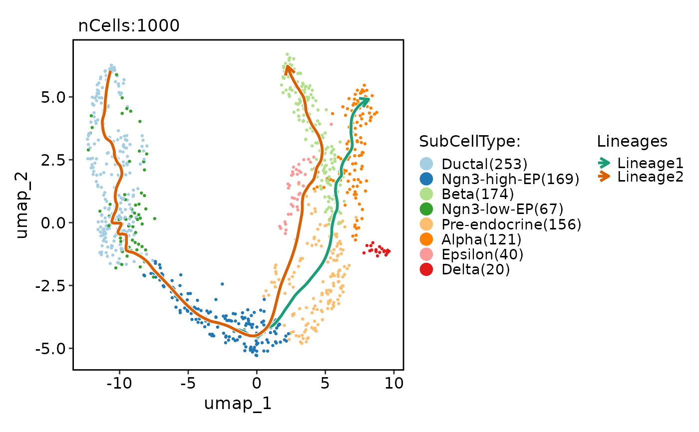
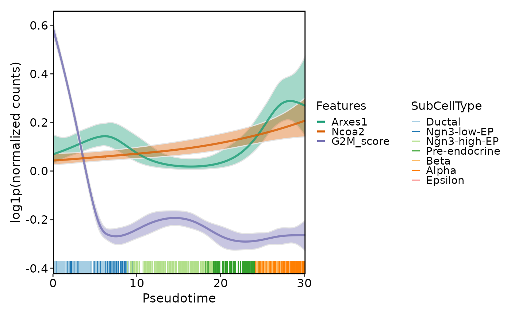
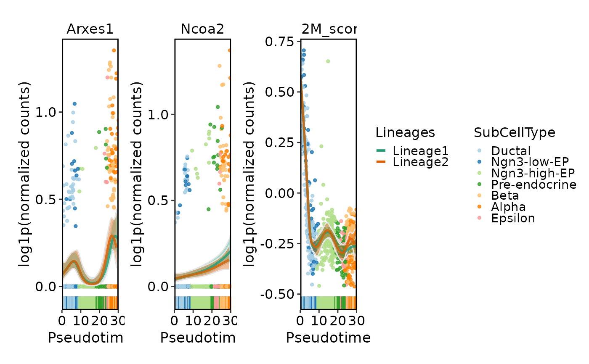
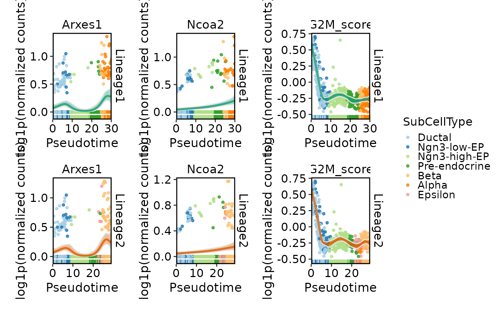
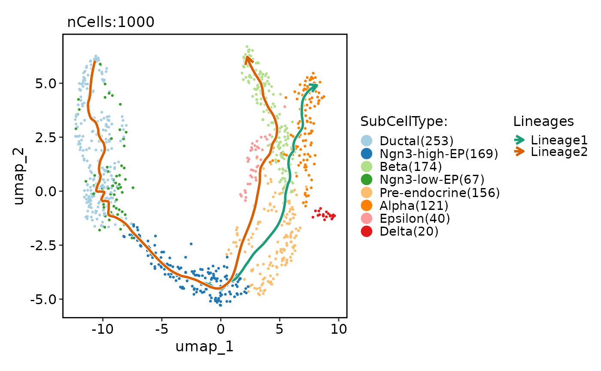
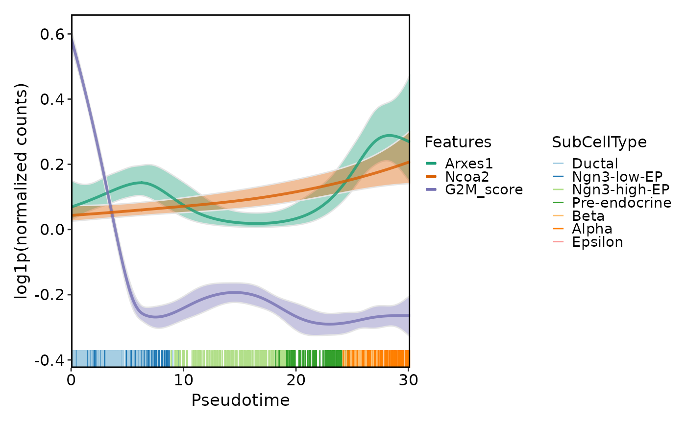
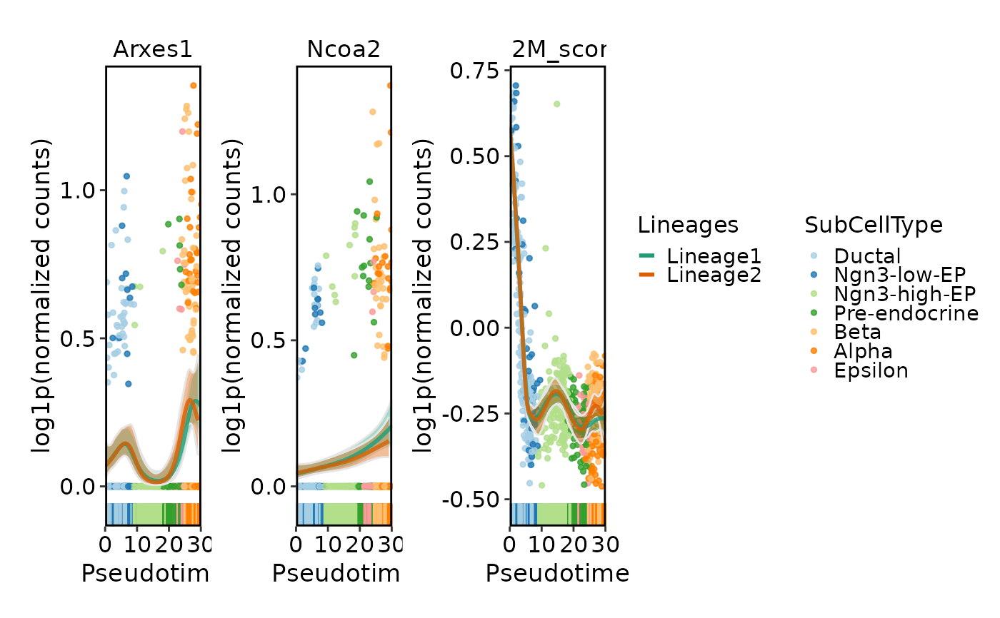
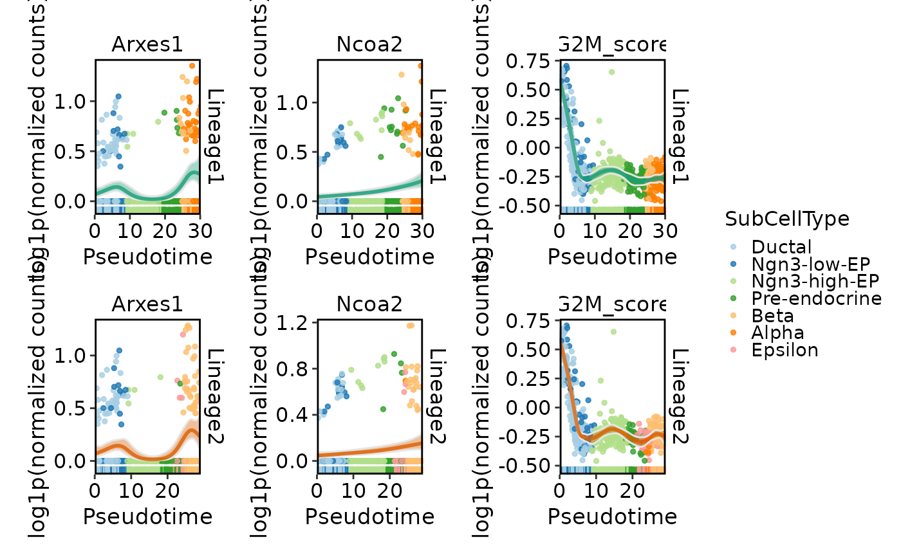

Plot dynamic features across pseudotime
Usage
DynamicPlot(
srt,
lineages,
features,
group.by = NULL,
cells = NULL,
layer = "counts",
assay = NULL,
family = NULL,
exp_method = c("log1p", "raw", "zscore", "fc", "log2fc"),
lib_normalize = identical(layer, "counts"),
libsize = NULL,
compare_lineages = TRUE,
compare_features = FALSE,
add_line = TRUE,
add_interval = TRUE,
line.size = 1,
line_palette = "Dark2",
line_palcolor = NULL,
add_point = TRUE,
pt.size = 1,
point_palette = "Paired",
point_palcolor = NULL,
add_rug = TRUE,
flip = FALSE,
reverse = FALSE,
x_order = c("value", "rank"),
aspect.ratio = NULL,
legend.position = "right",
legend.direction = "vertical",
theme_use = "theme_scop",
theme_args = list(),
combine = TRUE,
nrow = NULL,
ncol = NULL,
byrow = TRUE,
seed = 11
)Arguments
- srt
A Seurat object.
- lineages
A character vector specifying the lineages to plot.
- features
A character vector of features to use.
- group.by
Name of one or more meta.data columns to group (color) cells by.
- cells
A character vector of cell names to use. Default is
NULL.- layer
Which layer to use. Default is
"counts".- assay
Which assay to use. If
NULL, the default assay of the Seurat object will be used.- family
A character specifying the model used to calculate the dynamic features if needed. By default, this parameter is set to
NULL, and the appropriate family will be automatically determined.- exp_method
A character specifying the method to transform the expression values. Default is
"log1p"with options "log1p", "raw", "zscore", "fc", "log2fc".- lib_normalize
A boolean specifying whether to normalize the expression values using library size. Default the
layeris counts, this parameter is set toTRUE. Otherwise, it is set toFALSE.- libsize
A numeric vector specifying the library size for each cell. Default is
NULL.- compare_lineages
A boolean specifying whether to compare the lineages in the plot. Default is
TRUE.- compare_features
A boolean specifying whether to compare the features in the plot. Default is
FALSE.- add_line
A boolean specifying whether to add lines to the plot. Default is
TRUE.- add_interval
A boolean specifying whether to add confidence intervals to the plot. Default is
TRUE.- line.size
A numeric specifying the size of the lines. Default is
1.- line_palette
A character string specifying the name of the palette to use for the line colors. Default is
"Dark2".- line_palcolor
A vector specifying the colors to use for the line palette. Default is
NULL.- add_point
A boolean specifying whether to add points to the plot. Default is
TRUE.- pt.size
A numeric specifying the size of the points. Default is
1.- point_palette
A character string specifying the name of the palette to use for the point colors. Default is
"Paired".- point_palcolor
A vector specifying the colors to use for the point palette. Default is
NULL.- add_rug
A boolean specifying whether to add rugs to the plot. Default is
TRUE.- flip
A boolean specifying whether to flip the x-axis. Default is
FALSE.- reverse
A boolean specifying whether to reverse the x-axis. Default is
FALSE.- x_order
A character specifying the order of the x-axis values. Default is
c("value", "rank").- aspect.ratio
Aspect ratio of the panel. Default is
NULL.- legend.position
The position of legends, one of
"none","left","right","bottom","top". Default is"right".- legend.direction
The direction of the legend in the plot. Can be one of
"vertical"or"horizontal".- theme_use
Theme used. Can be a character string or a theme function. Default is
"theme_scop".- theme_args
Other arguments passed to the
theme_use. Default islist().- combine
Combine plots into a single
patchworkobject. IfFALSE, return a list of ggplot objects.- nrow
Number of rows in the combined plot. Default is
NULL, which means determined automatically based on the number of plots.- ncol
Number of columns in the combined plot. Default is
NULL, which means determined automatically based on the number of plots.- byrow
Whether to arrange the plots by row in the combined plot. Default is
TRUE.- seed
Random seed for reproducibility. Default is
11.
Examples
data(pancreas_sub)
pancreas_sub <- standard_scop(pancreas_sub)
#> ℹ [2026-01-30 16:45:21] Start standard scop workflow...
#> ℹ [2026-01-30 16:45:22] Checking a list of <Seurat>...
#> ! [2026-01-30 16:45:22] Data 1/1 of the `srt_list` is "unknown"
#> ℹ [2026-01-30 16:45:22] Perform `NormalizeData()` with `normalization.method = 'LogNormalize'` on the data 1/1 of the `srt_list`...
#> ℹ [2026-01-30 16:45:24] Perform `Seurat::FindVariableFeatures()` on the data 1/1 of the `srt_list`...
#> ℹ [2026-01-30 16:45:24] Use the separate HVF from srt_list
#> ℹ [2026-01-30 16:45:24] Number of available HVF: 2000
#> ℹ [2026-01-30 16:45:25] Finished check
#> ℹ [2026-01-30 16:45:25] Perform `Seurat::ScaleData()`
#> ℹ [2026-01-30 16:45:25] Perform pca linear dimension reduction
#> ℹ [2026-01-30 16:45:26] Perform `Seurat::FindClusters()` with `cluster_algorithm = 'louvain'` and `cluster_resolution = 0.6`
#> ℹ [2026-01-30 16:45:26] Reorder clusters...
#> ℹ [2026-01-30 16:45:26] Perform umap nonlinear dimension reduction
#> ℹ [2026-01-30 16:45:26] Non-linear dimensionality reduction (umap) using (Standardpca) dims (1-50) as input
#> ℹ [2026-01-30 16:45:30] Non-linear dimensionality reduction (umap) using (Standardpca) dims (1-50) as input
#> ✔ [2026-01-30 16:45:34] Run scop standard workflow completed
pancreas_sub <- RunSlingshot(
pancreas_sub,
group.by = "SubCellType",
reduction = "UMAP"
)
#> Warning: No shared levels found between `names(values)` of the manual scale and the
#> data's fill values.
#> Warning: No shared levels found between `names(values)` of the manual scale and the
#> data's fill values.
#> Warning: Removed 3 rows containing missing values or values outside the scale range
#> (`geom_path()`).
#> Warning: Removed 3 rows containing missing values or values outside the scale range
#> (`geom_path()`).
 CellDimPlot(
pancreas_sub,
group.by = "SubCellType",
reduction = "UMAP",
lineages = paste0("Lineage", 1:2),
lineages_span = 0.1
)
#> Warning: No shared levels found between `names(values)` of the manual scale and the
#> data's fill values.
#> Warning: No shared levels found between `names(values)` of the manual scale and the
#> data's fill values.

DynamicPlot(
pancreas_sub,
lineages = "Lineage1",
features = c("Arxes1", "Ncoa2", "G2M_score"),
group.by = "SubCellType",
compare_features = TRUE
)
#> ℹ [2026-01-30 16:45:36] Start find dynamic features
#> ℹ [2026-01-30 16:45:37] Data type is raw counts
#> ℹ [2026-01-30 16:45:37] Number of candidate features (union): 3
#> ℹ [2026-01-30 16:45:38] Data type is raw counts
#> ! [2026-01-30 16:45:38] Negative values detected
#> ℹ [2026-01-30 16:45:38] Calculating dynamic features for "Lineage1"...
#> ℹ [2026-01-30 16:45:38] Using 1 core
#> ⠙ [2026-01-30 16:45:38] Running for Arxes1 [1/3] ■■■■■■■■■■■ …
#> ✔ [2026-01-30 16:45:38] Completed 3 tasks in 140ms
#>
#> ℹ [2026-01-30 16:45:38] Building results
#> ✔ [2026-01-30 16:45:38] Find dynamic features done

DynamicPlot(
pancreas_sub,
lineages = c("Lineage1", "Lineage2"),
features = c("Arxes1", "Ncoa2", "G2M_score"),
group.by = "SubCellType",
compare_lineages = TRUE,
compare_features = FALSE
)
#> ℹ [2026-01-30 16:45:39] Start find dynamic features
#> ℹ [2026-01-30 16:45:39] Data type is raw counts
#> ℹ [2026-01-30 16:45:40] Number of candidate features (union): 3
#> ℹ [2026-01-30 16:45:40] Data type is raw counts
#> ! [2026-01-30 16:45:40] Negative values detected
#> ℹ [2026-01-30 16:45:40] Calculating dynamic features for "Lineage1"...
#> ℹ [2026-01-30 16:45:40] Using 1 core
#> ⠙ [2026-01-30 16:45:40] Running for Arxes1 [1/3] ■■■■■■■■■■■ …
#> ✔ [2026-01-30 16:45:40] Completed 3 tasks in 136ms
#>
#> ℹ [2026-01-30 16:45:40] Building results
#> ✔ [2026-01-30 16:45:40] Find dynamic features done
#> ℹ [2026-01-30 16:45:40] Start find dynamic features
#> ℹ [2026-01-30 16:45:41] Data type is raw counts
#> ℹ [2026-01-30 16:45:41] Number of candidate features (union): 3
#> ℹ [2026-01-30 16:45:42] Data type is raw counts
#> ! [2026-01-30 16:45:42] Negative values detected
#> ℹ [2026-01-30 16:45:42] Calculating dynamic features for "Lineage2"...
#> ℹ [2026-01-30 16:45:42] Using 1 core
#> ℹ [2026-01-30 16:45:42] Building results
#> ✔ [2026-01-30 16:45:42] Find dynamic features done
#> Warning: No shared levels found between `names(values)` of the manual scale and the
#> data's fill values.
#> Warning: No shared levels found between `names(values)` of the manual scale and the
#> data's fill values.
#> Warning: No shared levels found between `names(values)` of the manual scale and the
#> data's fill values.
#> Warning: No shared levels found between `names(values)` of the manual scale and the
#> data's fill values.

DynamicPlot(
pancreas_sub,
lineages = c("Lineage1", "Lineage2"),
features = c("Arxes1", "Ncoa2", "G2M_score"),
group.by = "SubCellType",
compare_lineages = FALSE,
compare_features = FALSE
)
#> ℹ [2026-01-30 16:45:43] Start find dynamic features
#> ℹ [2026-01-30 16:45:44] Data type is raw counts
#> ℹ [2026-01-30 16:45:44] Number of candidate features (union): 3
#> ℹ [2026-01-30 16:45:45] Data type is raw counts
#> ! [2026-01-30 16:45:45] Negative values detected
#> ℹ [2026-01-30 16:45:45] Calculating dynamic features for "Lineage1"...
#> ℹ [2026-01-30 16:45:45] Using 1 core
#> ⠙ [2026-01-30 16:45:45] Running for Arxes1 [1/3] ■■■■■■■■■■■ …
#> ✔ [2026-01-30 16:45:45] Completed 3 tasks in 135ms
#>
#> ℹ [2026-01-30 16:45:45] Building results
#> ✔ [2026-01-30 16:45:45] Find dynamic features done
#> ℹ [2026-01-30 16:45:45] Start find dynamic features
#> ℹ [2026-01-30 16:45:46] Data type is raw counts
#> ℹ [2026-01-30 16:45:46] Number of candidate features (union): 3
#> ℹ [2026-01-30 16:45:47] Data type is raw counts
#> ! [2026-01-30 16:45:47] Negative values detected
#> ℹ [2026-01-30 16:45:47] Calculating dynamic features for "Lineage2"...
#> ℹ [2026-01-30 16:45:47] Using 1 core
#> ⠙ [2026-01-30 16:45:47] Running for Arxes1 [1/3] ■■■■■■■■■■■ …
#> ✔ [2026-01-30 16:45:47] Completed 3 tasks in 160ms
#>
#> ℹ [2026-01-30 16:45:47] Building results
#> ✔ [2026-01-30 16:45:47] Find dynamic features done
#> Warning: No shared levels found between `names(values)` of the manual scale and the
#> data's fill values.
#> Warning: No shared levels found between `names(values)` of the manual scale and the
#> data's fill values.
#> Warning: No shared levels found between `names(values)` of the manual scale and the
#> data's fill values.
#> Warning: No shared levels found between `names(values)` of the manual scale and the
#> data's fill values.
#> Warning: No shared levels found between `names(values)` of the manual scale and the
#> data's fill values.
#> Warning: No shared levels found between `names(values)` of the manual scale and the
#> data's fill values.
#> Warning: No shared levels found between `names(values)` of the manual scale and the
#> data's fill values.

CellDimPlot(
pancreas_sub,
group.by = "SubCellType",
reduction = "UMAP",
lineages = paste0("Lineage", 1:2),
lineages_span = 0.1
)
#> Warning: No shared levels found between `names(values)` of the manual scale and the
#> data's fill values.
#> Warning: No shared levels found between `names(values)` of the manual scale and the
#> data's fill values.

DynamicPlot(
pancreas_sub,
lineages = "Lineage1",
features = c("Arxes1", "Ncoa2", "G2M_score"),
group.by = "SubCellType",
compare_features = TRUE
)
#> ℹ [2026-01-30 16:45:36] Start find dynamic features
#> ℹ [2026-01-30 16:45:37] Data type is raw counts
#> ℹ [2026-01-30 16:45:37] Number of candidate features (union): 3
#> ℹ [2026-01-30 16:45:38] Data type is raw counts
#> ! [2026-01-30 16:45:38] Negative values detected
#> ℹ [2026-01-30 16:45:38] Calculating dynamic features for "Lineage1"...
#> ℹ [2026-01-30 16:45:38] Using 1 core
#> ⠙ [2026-01-30 16:45:38] Running for Arxes1 [1/3] ■■■■■■■■■■■ …
#> ✔ [2026-01-30 16:45:38] Completed 3 tasks in 140ms
#>
#> ℹ [2026-01-30 16:45:38] Building results
#> ✔ [2026-01-30 16:45:38] Find dynamic features done

DynamicPlot(
pancreas_sub,
lineages = c("Lineage1", "Lineage2"),
features = c("Arxes1", "Ncoa2", "G2M_score"),
group.by = "SubCellType",
compare_lineages = TRUE,
compare_features = FALSE
)
#> ℹ [2026-01-30 16:45:39] Start find dynamic features
#> ℹ [2026-01-30 16:45:39] Data type is raw counts
#> ℹ [2026-01-30 16:45:40] Number of candidate features (union): 3
#> ℹ [2026-01-30 16:45:40] Data type is raw counts
#> ! [2026-01-30 16:45:40] Negative values detected
#> ℹ [2026-01-30 16:45:40] Calculating dynamic features for "Lineage1"...
#> ℹ [2026-01-30 16:45:40] Using 1 core
#> ⠙ [2026-01-30 16:45:40] Running for Arxes1 [1/3] ■■■■■■■■■■■ …
#> ✔ [2026-01-30 16:45:40] Completed 3 tasks in 136ms
#>
#> ℹ [2026-01-30 16:45:40] Building results
#> ✔ [2026-01-30 16:45:40] Find dynamic features done
#> ℹ [2026-01-30 16:45:40] Start find dynamic features
#> ℹ [2026-01-30 16:45:41] Data type is raw counts
#> ℹ [2026-01-30 16:45:41] Number of candidate features (union): 3
#> ℹ [2026-01-30 16:45:42] Data type is raw counts
#> ! [2026-01-30 16:45:42] Negative values detected
#> ℹ [2026-01-30 16:45:42] Calculating dynamic features for "Lineage2"...
#> ℹ [2026-01-30 16:45:42] Using 1 core
#> ℹ [2026-01-30 16:45:42] Building results
#> ✔ [2026-01-30 16:45:42] Find dynamic features done
#> Warning: No shared levels found between `names(values)` of the manual scale and the
#> data's fill values.
#> Warning: No shared levels found between `names(values)` of the manual scale and the
#> data's fill values.
#> Warning: No shared levels found between `names(values)` of the manual scale and the
#> data's fill values.
#> Warning: No shared levels found between `names(values)` of the manual scale and the
#> data's fill values.

DynamicPlot(
pancreas_sub,
lineages = c("Lineage1", "Lineage2"),
features = c("Arxes1", "Ncoa2", "G2M_score"),
group.by = "SubCellType",
compare_lineages = FALSE,
compare_features = FALSE
)
#> ℹ [2026-01-30 16:45:43] Start find dynamic features
#> ℹ [2026-01-30 16:45:44] Data type is raw counts
#> ℹ [2026-01-30 16:45:44] Number of candidate features (union): 3
#> ℹ [2026-01-30 16:45:45] Data type is raw counts
#> ! [2026-01-30 16:45:45] Negative values detected
#> ℹ [2026-01-30 16:45:45] Calculating dynamic features for "Lineage1"...
#> ℹ [2026-01-30 16:45:45] Using 1 core
#> ⠙ [2026-01-30 16:45:45] Running for Arxes1 [1/3] ■■■■■■■■■■■ …
#> ✔ [2026-01-30 16:45:45] Completed 3 tasks in 135ms
#>
#> ℹ [2026-01-30 16:45:45] Building results
#> ✔ [2026-01-30 16:45:45] Find dynamic features done
#> ℹ [2026-01-30 16:45:45] Start find dynamic features
#> ℹ [2026-01-30 16:45:46] Data type is raw counts
#> ℹ [2026-01-30 16:45:46] Number of candidate features (union): 3
#> ℹ [2026-01-30 16:45:47] Data type is raw counts
#> ! [2026-01-30 16:45:47] Negative values detected
#> ℹ [2026-01-30 16:45:47] Calculating dynamic features for "Lineage2"...
#> ℹ [2026-01-30 16:45:47] Using 1 core
#> ⠙ [2026-01-30 16:45:47] Running for Arxes1 [1/3] ■■■■■■■■■■■ …
#> ✔ [2026-01-30 16:45:47] Completed 3 tasks in 160ms
#>
#> ℹ [2026-01-30 16:45:47] Building results
#> ✔ [2026-01-30 16:45:47] Find dynamic features done
#> Warning: No shared levels found between `names(values)` of the manual scale and the
#> data's fill values.
#> Warning: No shared levels found between `names(values)` of the manual scale and the
#> data's fill values.
#> Warning: No shared levels found between `names(values)` of the manual scale and the
#> data's fill values.
#> Warning: No shared levels found between `names(values)` of the manual scale and the
#> data's fill values.
#> Warning: No shared levels found between `names(values)` of the manual scale and the
#> data's fill values.
#> Warning: No shared levels found between `names(values)` of the manual scale and the
#> data's fill values.
#> Warning: No shared levels found between `names(values)` of the manual scale and the
#> data's fill values.
